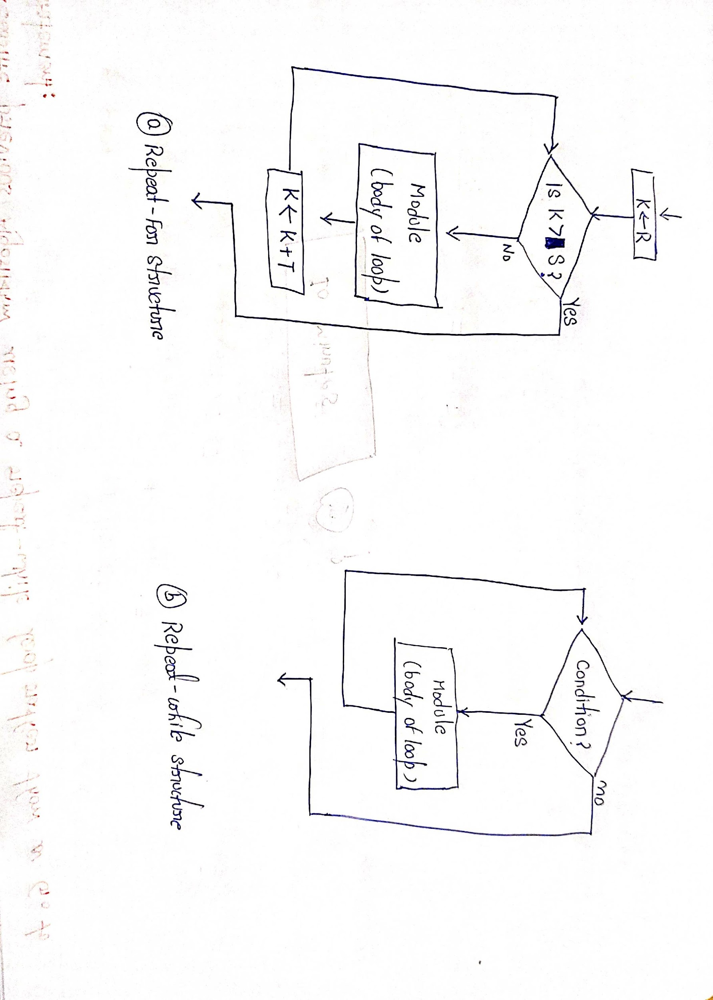
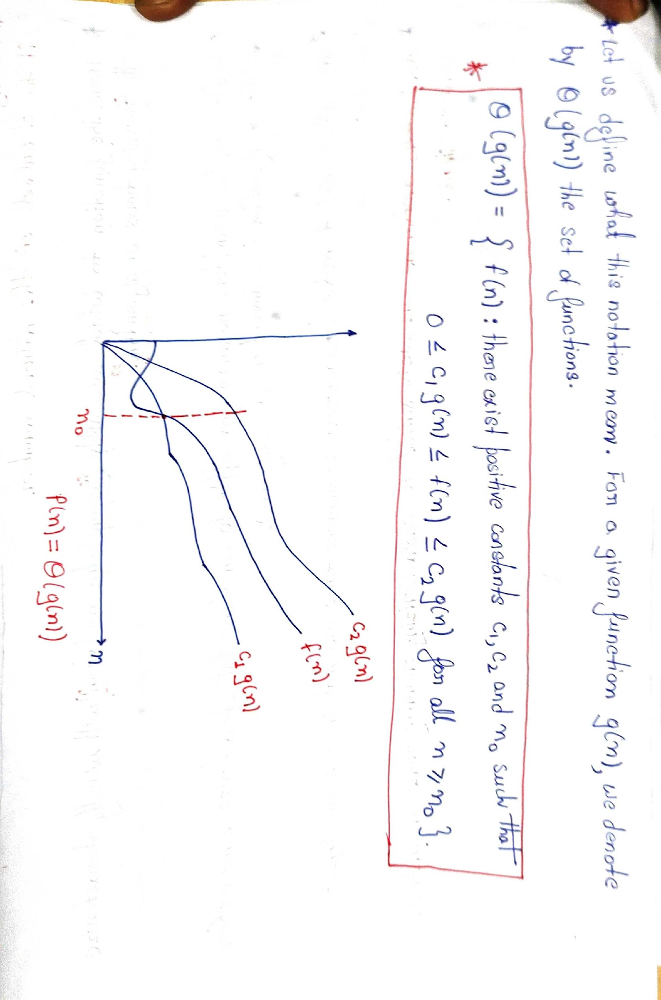

Algorithm Analysis and Runtime
Growth of functions, key/dominating operations, best/average/worst case, linear search, and the start of asymptotic analysis (Θ). Date on these notes: 29 August 2026.
Jump to a topic
- 1. Recap — standard functions
- 2. Structure of an algorithm & control logic
- 3. What analysis is and why we need it
- 4. Platform-independent analysis
- 5. Efficiency, scalability, time and space
- 6. Key / dominating operations and f(n)
- 7. Best, average, worst case
- 8. Linear search (Algorithm 2.4)
- 9. Growth of functions
- 10. Asymptotic analysis and Θ-notation
- 11. Exam sheet
1. Recap — standard notations and common functions
The previous class (and the opening of the instructor PPT) covered functions that show up when you write f(n), analyse loops, solve recurrences, and compare growth:
- Monotonicity
- Floor and ceiling
- Modulo / congruence
- Polynomials (and polynomially bounded functions)
- Also used later: factorial, Fibonacci, logs, exponentials
Floor ⌊x⌋ and ceiling ⌈x⌉ appear again and again in later algorithms (binary search midpoints, divide-and-conquer sizes, etc.).
1.1 Monotonicity (PPT)
1.2 Floor and ceiling (PPT)
Floor ⌊x⌋ = greatest integer ≤ x (greatest integer that does not exceed x).
Ceiling ⌈x⌉ = least integer ≥ x (least integer that is not less than x).
For any real x:
For any integer n:
1.3 Modular arithmetic (PPT)
For integer a and positive integer n, a mod n (read “a modulo n”) is the remainder (residue) of a/n.
If (a mod n) = (b mod n), write a ≡ b (mod n) and say a is congruent (equivalent) to b modulo n. Equivalent: n divides (b − a).
1.4 Polynomials (PPT, numbered “8” on the handwritten sheet)
For nonnegative integer degree d, with coefficients a0, …, ad and ad ≠ 0:
p is asymptotically positive iff ad > 0. Then p(n) = Θ(nd) — the highest power dominates.
For real constant a: na is monotonically increasing if a > 0, monotonically decreasing if a ≤ 0.
f(n) is polynomially bounded if f(n) = O(nk) for some constant k.
1.5 Factorial and input growth (class)
5! versus 25! is used to feel how work explodes when the “size” of the object grows. Computational complexity generally increases as input size increases.
2. Structure of an algorithm and three control logics
An algorithm generally has a start, an end, control logic, and the statements that do the work. Control logic decides the flow.
PPT: three types of logic / flow of control:
- Sequence logic (sequential flow)
- Selection logic (conditional flow)
- Iteration logic (repetitive flow)
2.1 Sequence
Unless told otherwise, modules run in the obvious order: Module A → Module B → Module C. No decision changes the path. Class picture: 1 → 2 → 3 → … → 8.
2.2 Selection (PPT)
Selection uses conditions to pick one of several alternative modules. Implemented by a conditional structure / IF statement, closed by “End of IF structure”.
Three kinds: single, double, multiple alternatives. Class examples: if, if-else, else-if, switch/case.
Single alternative (PPT):
IF condition, then:
[Module A]
[End of IF structure]Flowchart: diamond “Condition?” — Yes goes through Module A; No skips it and joins below.
Class: path can jump, e.g. 1 → 2 → 3 → 8 → 17 → 20, depending on conditions.
2.3 Iteration (PPT)
Each type begins with a Repeat statement; the repeated module is the body of the loop.
Repeat-for uses an index (e.g. k):
Repeat for k = R to S by T:
[Module]
[End of loop.]R = initial value, S = end / test value, T = increment (if T > 0) or decrement (if T < 0).
Flowchart (a): K ← R; diamond “Is K > S?”; if No, run body then K ← K + T and test again; if Yes, leave.
Repeat-while uses a condition:
Repeat while condition:
[Module]
[End of loop.]Flowchart (b): diamond “Condition?”; Yes → body → back to test; No → exit. Class: for / while; execute → check → execute … until termination.

3. What algorithmic analysis is and why we need it
Design = build a correct algorithm. Analysis = how good / efficient it is. Design is often not the hard part; comparing correct algorithms is.
PPT definition: algorithm analysis evaluates performance in terms of efficiency and scalability. Primary goal: understand behaviour as input size grows, and find bottlenecks.
Two approaches in the PPT:
- Empirical: run on different sizes and time each run.
- Theoretical: count operations as a function of input size (this course’s main path).
Class: four students S1…S4 write codes C1…C4; all correct, no bugs, right output. Correctness does not tell you which is superior. Analysis is how we compare.
4. Platform-independent analysis
Goal: a theoretical, platform-independent model. Wall-clock time on one machine is unfair: slow PC vs fast PC, HDD vs SSD, less vs more RAM, different OS. The same algorithm can look faster only because hardware is faster.
So we count work in the algorithm, not stopwatch time on one laptop.
5. Efficiency, scalability, time and space
Efficiency (class): time taken — in analysis, time means key-operation count, not a single machine’s clock.
Scalability: how work changes when n changes (linear search on 20 vs 10,000 elements).
For small n (e.g. 10) two algorithms A1, A2 may look similar; at n = 10,000 the gap can explode. An algorithm that is “fine” on a toy input can be unusable on a large one. Input growth is central.
5.1 Other factors (PPT)
- Memory — space complexity. Class: merge sort often uses extra space on the order of the input (talked about as 2n in the simplified model).
- Parallelism — some work can run at the same time; can cut practical time.
- Heuristics / optimisation — can improve practical performance or help pick an algorithm for a hard problem.
PPT: these are also “analysis” (space, parallelism, optimisation). This lecture still focuses on time / runtime.
5.2 Two main measures (PPT handwritten sheet)
Suppose M is an algorithm and n is the size of the input.
- Time and space used by M are the two main efficiency measures.
- Time is measured by counting key operations — in sorting and searching, e.g. the number of comparisons.
- Key operations are defined so that time for other operations is much less than, or at most proportional to, the time for the key operations.
- Space is measured by counting the maximum memory needed.
- Complexity of M is a function f(n) giving running time and/or storage in terms of n.
PPT extra: storage space is often simply a multiple of data size n. Unless otherwise stated, “complexity” means running time.
n is a positive integer in this model: 1, 2, 3, … (sorting 10 numbers ⇒ n = 10; 10,000 numbers ⇒ n = 10,000). PPT later: asymptotic notations are defined on natural numbers N = {0, 1, 2, …} for worst-case T(n) on integer sizes.
6. Key / dominating operations and deriving f(n)
A key (dominating) operation is the one done repeatedly whose cost is most of the work. Do not treat every assignment as equal to a heavy operation.
Class: multiplication may dominate addition. For search and sort in this course, the key operation is almost always comparison (A[i] == key, A[i] < A[j]). Assignment like x = 10 is treated as cheap. PPT whiteboard: finding the max also goes through comparison; comparison is the key operation in search/sort; f(n) depends on input size and the dominating operation.
6.1 Counting a loop (class)
for i = 1 to n
perform operationBody ~ n times; condition often ~ n+1 (extra failing check). Init once, increment n times. One possible aggregate:
Exact constants depend on what you count. For large n, 4 is negligible next to 3n, so 3n + 4 ~ n, i.e. O(n) / later Θ(n).
7. Best case, average case, worst case
Running time depends not only on n but on the particular data.
PPT text example: search a short English TEXT for a 3-letter word w. If w is “the”, it likely appears near the start → f(n) small (best-like). If w is “zoo” (class used “two”), it may never appear → scan everything → f(n) large (worst-like). Same n, same algorithm, different behaviour.
Array example from class: [7, 9, 3, 2, 5, 21, 31], n = 7, linear search.
- Search 9 or 7 near the front → few comparisons (best-type).
- Search 5 or 21 in the middle → several comparisons (not automatically “the average”).
- Search 31 (last) or 41 (absent) → ~n comparisons (worst).
Formal (class + PPT)
Do not say “the middle position is always the average case.” Average needs a probability distribution. Positions need not be equally likely.
If values m1, …, mk occur with probabilities p1, …, pk (PPT):
A common assumption: all n positions equally likely, each p = 1/n. PPT also: all permutations of the input equally likely (typical for sorting analysis later).
8. Linear search — full algorithm and complexity
Array DATA with n elements; given ITEM; find LOC of ITEM or report it is missing. Compare ITEM with DATA[1], DATA[2], … until found or the list ends.
Variables: DATA, ITEM, LOC (0 means not found yet). Counter K starts at 1.
Algorithm 2.4 (Linear Search) — instructor PPT
Given DATA with N elements and ITEM. Find LOC of ITEM or set LOC = 0.
1. [Initialize] Set K := 1 and LOC := 0.
2. Repeat Steps 3 and 4 while LOC = 0 and K ≤ N.
3. IF ITEM = DATA[K], then: Set LOC := K.
4. Set K := K + 1. [Increments counter.]
[End of Step 2 loop.]
5. [Successful?]
IF LOC = 0, then:
Write: ITEM is not in the array DATA.
Else:
Write: LOC is the location of ITEM.
[End of If structure.]
6. Exit.Loop ends when the item is found (LOC ≠ 0) or K goes past N.
Complexity C(n) = number of comparisons ITEM vs DATA[K] (PPT)
Worst case: ITEM is last, or not in DATA. Then C(n) = n. Worst-case complexity of linear search is n, i.e. O(n) (linear).
Best case: found at the first position (e.g. search 7 in the class array). Constant work → O(1).
Average case (successful search, equal probability): number of comparisons is 1, 2, …, n each with p = 1/n.
This matches the intuition “about half the list.” Asymptotically still O(n) / Θ(n). Average ≈ n/2 and worst = n are not equal as numbers; they are the same growth class.
| Case | Work (comparisons) | Order |
|---|---|---|
| Best | constant (found first) | O(1) |
| Average (equal p, successful) | (n+1)/2 | O(n) |
| Worst | n (last or absent) | O(n) |
9. Growth of functions
After f(n) = 3n + 4 we compare with a standard g(n) of the same growth. PPT: complexity of M increases with n; we examine the rate of increase vs standard functions.
Standard list (PPT box): log2 n, n, n log2 n, n², n³, 2n.
PPT table (rounded, to feel the explosion)
| n | log2 n | n | n log2 n | n² | n³ | 2n |
|---|---|---|---|---|---|---|
| 5 | 3 | 5 | 15 | 25 | 125 | 32 |
| 10 | 4 | 10 | 40 | 100 | 10³ | ~10³ |
| 100 | 7 | 100 | 700 | 10⁴ | 10⁶ | ~1030 |
| 1000 | 10 | 10³ | 10⁴ | 10⁶ | 10⁹ | ~10300 |
Class more precise samples: log2 5 ≈ 2.32, n log2 n ≈ 11.61; log2 10 ≈ 3.32, n log2 n ≈ 33.22; log2 1000 ≈ 9.97, n log2 n ≈ 9966. Same story: log stays tiny; 2n becomes impossible.
- O(log n) stays usable as n grows.
- O(n) grows in proportion to n.
- O(n²): double n ≈ 4× dominant work.
- O(n³): double n ≈ 8×.
- O(2n): explodes.
f(n) = 3n + 4 has the same order as g(n) = n.
10. Asymptotic analysis and Θ-notation
PPT dictionary idea: an asymptotic function approaches a given value as an expression containing a variable tends to infinity. We care how running time increases with input size in the limit, as size increases without bound (n → ∞). An algorithm that is asymptotically more efficient is the best choice for all but very small inputs. Do not only ask “faster on today’s tiny test”; ask “which scales?”
Class five notations (details of O, Ω, o, ω continue later; this deck develops Θ):
Exact f(n) keeps constants; the notation is the growth class. 3n + 4 is Θ(n) and therefore also O(n).
10.1 Formal Θ (PPT)
For a given g(n), Θ(g(n)) is the set of functions
Read: “f of n is theta of g of n.” Because it is a set we may write f(n) ∈ Θ(g(n)); we usually write f(n) = Θ(g(n)) for the same idea.
For all n at and to the right of n0, f(n) lies at or above c1g(n) and at or below c2g(n). Then g(n) is an asymptotically tight bound for f(n).

Every member f ∈ Θ(g(n)) must be asymptotically nonnegative: f(n) ≥ 0 for all sufficiently large n.
10.2 Worked example (PPT)
f(n) = 18n + 9. Given f(n) > 18n and f(n) ≤ 27n for n ≥ 1. Take g(n) = 3n. Need
Works with c1 = 6 (6·3n = 18n ≤ 18n+9), c2 = 9 (9·3n = 27n ≥ 18n+9), n0 = 1. So 18n + 9 ∈ Θ(3n), i.e. Θ(n).
11. Exam sheet
Definitions to write
- Algorithmic analysis: evaluate efficiency and scalability.
- Efficiency: computational time/work (key-op count).
- Scalability: behaviour as n grows.
- Key / dominating operation: the op whose cost is most of the work; others much smaller or at most proportional.
- Time complexity: how work grows with n. Space: maximum memory vs n.
- Best / worst / average: min / max / expected f(n).
- Asymptotic analysis: n → ∞; drop constants and lower-order terms.
- Θ: tight bound; sandwich with two positive constants past n0.
Must-remember formulae
Linear search orders
Best O(1); average O(n); worst O(n). Default “complexity” in this course = worst case.
One-line summary
Turn an algorithm into f(n) by counting the key operation, study best/average/worst, then classify growth with standard functions and asymptotic notation as n becomes very large.